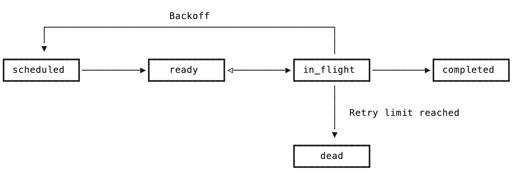
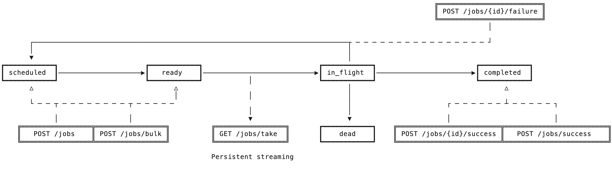

Introduction
Zizq is a lightweight, self-contained and persistent job queue server with a simple HTTP API. Workers interact with the server to enqueue, take, and process jobs.
If you have not yet installed Zizq, follow the Getting Started guide first. In most cases, you will not need to directly interact with the API and will instead install and use a client library for your specific programming language. You do not need to read this API documentation if you are only using a client library.
Note
Examples in this documentation use HTTPie, which is a command line HTTP client similar to cURL but much friendlier when working with JSON APIs.
Base URL
All endpoints are relative to the base URL of the HTTP listener, which by
default is on 127.0.0.1:7890.
http://127.0.0.1:7890/{endpoint}
Content Type
All endpoints support both JSON and MessagePack for
both request and response bodies. The default content type is JSON unless
otherwise specified by the Accept: and Content-type: headers. Examples in
this documentation will use JSON throughout for readability.
| Content type | Name |
|---|---|
application/json default | JSON |
application/x-ndjson default streaming | Newline Delimited JSON |
application/msgpack | MessagePack |
application/vnd.zizq.msgpack-stream streaming | MessagePack Stream |
Payloads sent in MessagePack format have the same shape and data types as those sent in JSON format.
NDJSON
Newline delimited JSON appears as:
{"id":"03fqs300nc99wa7twropnx7ed"}
{"id":"03fqznh2uh5ulpzcagbnw1um5"}
{"id":"03fqznjh9w5mz8ndyysrhs8my"}
{"id":"03fqznjnjo1gohd0k0s92m0e4"}
Where each JSON message is valid JSON, and messages are separated by one or
more "\n" newline characters, which the client skips.
MessagePack Stream
Length-prefixed MessagePack streams are in the following format:
\x00\x00\x00\x0c \x00\x00\x00\x00\x00\x00\x00\x00\x00\x00\x00\x00
\x00\x00\x00\x08 \x00\x00\x00\x00\x00\x00\x00\x00
\x00\x00\x00\x00
\x00\x00\x00\x00
\x00\x00\x00\x0a \x00\x00\x00\x00\x00\x00\x00\x00\x00\x00
\x00\x00\x00\x00
\x00\x00\x00\x08 \x00\x00\x00\x00\x00\x00\x00\x00
The stream consists of 4-byte prefixes, which are 32-bit integers in big-endian
form and specify the following number of bytes that contain a valid MessagePack
payload. Empty messages may appear in the stream and are skipped by the client.
These are naturally identified by the fact they have a zero length
\x00\x00\x00\x00.
Endpoint Versioning
In order to minimize bloat the server does not provide multiple versions of each endpoint. Clients should check the server version for compatability. The a change in the major version of the server indicates a backwards-incompatible change, while minor version changes will always be backwards-compatible. Clients should be upgraded accordingly, much like how a major RDBMS version upgrade would be managed.
Authentication
The server does not currently implement authentication. Any machine that can access the port can make API calls. The API should be secured accordingly (e.g. only bind to an interface that is on an internal network and not on the public internet).
Note
Work is planned to implement optional access control using a combination of Mutual TLS and API keys.
Common Concepts
It helps to understand the following concepts before reading the documentation for each endpoint.
IDs
All jobs are assigned a unique ID by the server that stays with that job for its entire lifecycle. The ID is time-ordered and lexicographically sortable, which enables FIFO (first-in, first-out) ordering of enqueued jobs within the same priority.
Priorities
Jobs have an 16-bit integer priority (0 to 65536). Lower values are
dequeued before higher values. The default is the midpoint 32768. In practice
this means if 1000 jobs are enqueued with priority 1000 those jobs will be
processed in FIFO order, but if during processing a new job is enqueued with
priority 500 that job will be placed ahead of the existing jobs in the queue
and will be processed next. This is a powerful construct when used correctly.
Queues
Zizq is structured as a collection of named queues. All jobs specify a queue name onto which they are placed, and workers either take jobs from specific queues, or from all queues combined. This enables logically separating different types of workloads from others, for example so that some workers can be scaled differently to others.
While the queue is a required input when enqueueing jobs, the exact value is
an arbitrary string specific to your application. The only restriction is that
they cannot contain "," commas. Queues do not need to be explicitly created
before they are first used.
Examples: emails, billing.payments.
Timestamps
Jobs store a number of different timestamps across their lifecycle. All timestamps in milliseconds since the Unix epoch.
| Timestamp | Description |
|---|---|
ready_at | The time at which the job becomes, or became ready |
dequeued_at | The time at which the job entered the in_flight status |
failed_at | The time at which the job last failed |
completed_at | The time at which the job completed successfully |
purge_at | If the job is retained on completion, the time at which the job will be dropped by Zizq’s internal reaper |
Status
Jobs in Zizq can be in one of a number of statuses depending on where the job is within its lifecycle.
| Status | Description |
|---|---|
scheduled |
The job is not yet ready for processing. It's ready_at
timestamp specifies when it becomes ready. Jobs can be in this
status either because they were enqueued with a future-dated
ready_at timestamp, or because they previously failed
and are backing off (see attempts and
failed_at).
|
ready |
The job is ready for processing but has not been picked up by a
worker. It's ready_at timestamp specifies when it
entered this status.
|
in_flight |
A worker has taken this job from the queue but has not yet sent
an acknowledgement to indicate processing has completed. It's
dequeued_at timestamp specifies when it was taken
by the worker.
|
completed |
The job was successfully processed by a worker. In practice
jobs will only be visible in this status if the completed jobs
retention policy is configured to retain successful jobs. It's
completed_at timestamp specifies when the job was
marked completed by the worker.
|
dead |
The job exceeded its retry count and was killed by the server,
or the worker explicitly killed the job to prevent further
retries. It's failed_at timestamp specifies when
the job last failed, and a full list of errors is available
through the errors endpoint.
|
Backoff
Applications are not perfect. The world can be unpredictable. Systems can be unreliable and jobs may fail. When this happens, Zizq automatically reschedules the job with an increasing delay up until a maximum number of retries.
Retention
When jobs reach the end of their lifecycle, either because they completed
successfully, or because they failed too many times, Zizq can be configured to
keep the job data for a period of time to aid with debugging. By default Zizq
retains dead jobs for 7 days, but drops completed jobs immediately. Both
of these behaviours are configurable.
Job Lifecycle
Jobs progress through the different statues as their lifecycle progresses.

Upon enqueue, a job begins either in the scheduled status or in the ready
status, depending on the value optionally specified in the ready_at timestamp
when enqueueing the job. Scheduled jobs are automatically promoted to ready
by Zizq’s internal job scheduler.
Jobs enter the in_flight status when they are dequeued by a worker and they
remain in this status until the worker either notifies success or failure, or
is disconnected for any reason, at which point Zizq automatically returns the
job to the ready status. In the event of a system failure, such as low of
power, Zizq automatically returns any in_flight jobs to the ready status.
When a worker notifies the Zizq server that an in_flight job completed
successfully, that job moves into the completed status and is either dropped
immediately, or retained for a period of time according to the job retention
policy.
When a worker notifies the Zizq server that an in_flight job failed due to an
error, Zizq records the error against the job, checks how many times that job
has failed and then either reschedules the job according to the backoff policy,
or marks the job dead. Dead jobs are retained for a period of time by default,
but may be immediately dropped depending on the retention policy.
Clients call the endpoints in the following sequence. Enqueues happen concurrently with workers processing jobs.

- Application enqueues jobs with
POST /jobsorPOST /jobs/bulk. - Workers take those jobs by streaming them over a persistent connection on
GET /jobs/take. The server does not close this connection. - Upon success, workers notify the Zizq API with
POST /jobs/{id}/successorPOST /jobs/success(bulk). - Upon failure, workers notify the Zizq API with
POST /jobs/{id}/failure. Zizq may schedule this job for a retry.